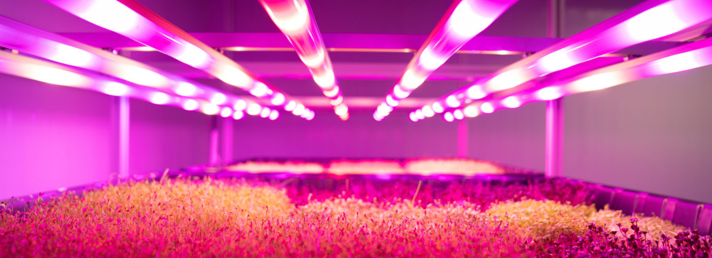
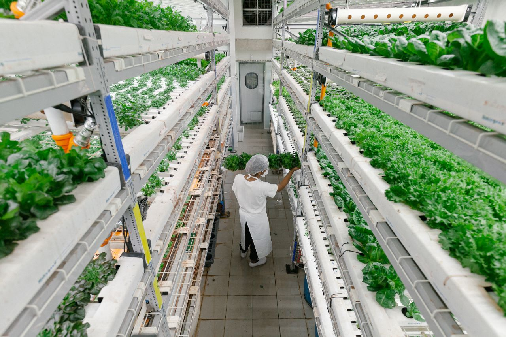
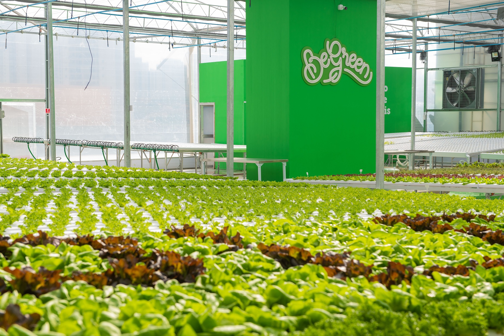

As Fazendas Urbanas
As fazendas urbanas representam uma revolução na forma como produzimos alimentos nas áreas urbanas. Essas iniciativas combinam tecnologia de ponta, práticas sustentáveis e inovação para cultivar alimentos frescos e saudáveis diretamente nas cidades.
Com o uso de avançados sistemas de iluminação LED, controle climático preciso e métodos de cultivo vertical, as fazendas urbanas conseguem otimizar o espaço e aumentar a produtividade, garantindo uma colheita constante ao longo do ano, independentemente das condições climáticas.
Nosso portal Cultivando Conhecimento oferece uma visão abrangente sobre as fazendas urbanas no Brasil. Explore os benefícios da produção local de alimentos, a redução da pegada de carbono, a geração de empregos e a promoção da segurança alimentar.
Descubra como as fazendas urbanas estão impulsionando a agricultura sustentável e contribuindo para a construção de cidades mais verdes e resilientes. Acesse informações detalhadas sobre fazendas urbanas em diferentes regiões, seus métodos de cultivo e os produtos que oferecem à comunidade.
Pink Farms
A Pink Farms é a primeira e maior fazenda urbana vertical do Brasil e da América Latina. Localizada em São Paulo, a Pink Farms utiliza tecnologia inovadora para cultivar produtos naturais e frescos em um ambiente controlado, permitindo o crescimento saudável das plantas sem o uso de agrotóxicos.
A empresa se destaca por seu compromisso em oferecer condições ideais para o cultivo de diversas espécies, resultando em produtos de sabores fantásticos e alta qualidade. Através de fazendas verticais, a Pink Farms busca aumentar a produtividade por área, superando 100 vezes a produtividade no campo. Além disso, o cultivo vertical reduz a necessidade de recursos naturais como água.
A Pink Farms é pioneira no setor de fazendas urbanas verticais no Brasil, revolucionando a maneira como os alimentos são produzidos e consumidos. A empresa atraiu investimentos e se tornou uma referência na produção sustentável de alimentos, atendendo à crescente demanda por opções frescas e saudáveis em ambientes urbanos.

Fazenda Cubo
A Fazenda Cubo é um projeto de agricultura urbana indoor localizado em Pinheiros, São Paulo. Com o objetivo de encurtar a distância entre o cultivo de alimentos e o consumo, a fazenda busca que as pessoas saibam a origem de seus alimentos e se reconectem com a natureza. Especializada no cultivo de hortaliças, ela opera em um ambiente controlado e limpo, sem a utilização de agrotóxicos, garantindo produtos frescos e saudáveis aos consumidores.
Todos os produtos da Fazenda Cubo são cultivados em um ambiente rigorosamente controlado, excluindo completamente o uso de agrotóxicos durante o processo de cultivo. Além disso, a fazenda oferece a oportunidade de adquirir hortaliças diretamente no local de produção, evitando o transporte por caminhões e reduzindo o desperdício e as emissões de CO2.
A iniciativa busca promover a conscientização ambiental e educar os consumidores sobre a procedência dos alimentos que consomem. Ao empregar o conceito de agricultura urbana e cultivo em ambientes controlados, a Fazenda Cubo opera de maneira eficiente em espaços limitados, aproximando a produção do mercado consumidor.
Em resumo, a Fazenda Cubo é um exemplo inovador de agricultura urbana que proporciona a produção local de alimentos frescos em ambientes controlados, atuando como uma solução sustentável para a conscientização ambiental e a redução do impacto ambiental associado ao transporte de alimentos.

BeGreen
A BeGreen é uma rede de fazendas urbanas operando em São Paulo, com uma abordagem inovadora para a produção de alimentos saudáveis e sustentáveis. Utilizando tecnologias avançadas e sistemas de cultivo hidropônico, a BeGreen cultiva hortaliças o ano inteiro, sem o uso de agrotóxicos. A rede possui unidades em shoppings e áreas urbanas, adotando sistemas de cultivo em estufas de alta tecnologia, permitindo o controle preciso do ambiente para garantir o crescimento saudável das plantas.
